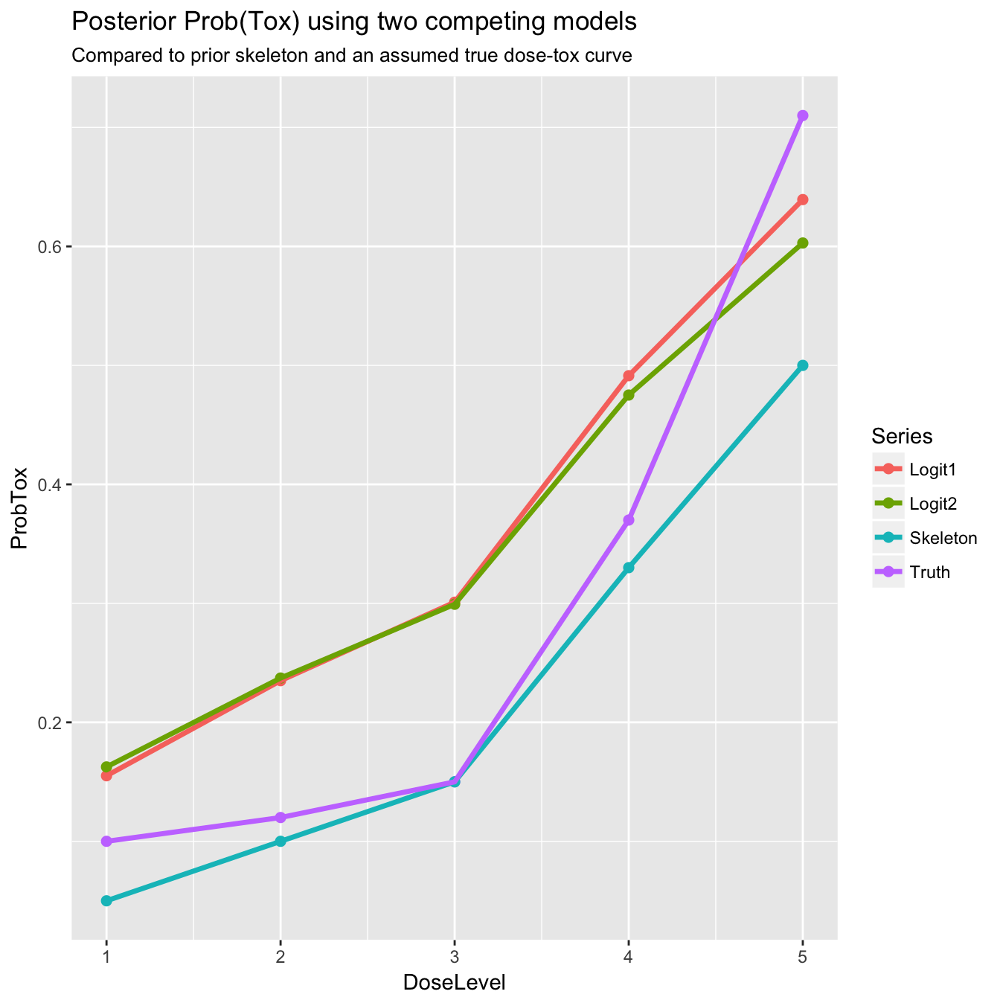

In the introductory vignette, we learned about the different variants of the CRM model implemented in trialr. Typically, the trialists choose a model implementation at the start of the trial and stick with it throughout. Some have preferred a two-parameter logit model over the one-parameter logit and empiric models because of the flexibility arising from the extra parameter. However, the inventor of the CRM has expressed his preference for the one-parameter models (citation needed).
The loo package by Vehtari, Gelman, Gabry, Piironen & Goodrich and accompanying publication Vehtari, Gelman, and Gabry (2016), provides approximate leave-one-out cross-validation (LOO) using Pareto smoothed importance sampling. This allows objective choice between competing Bayesian models via the leave-one-out information criterion (LOOIC). The different implementations of CRM in trialr each support the loo package. The result is that analysts can choose between the CRM variants at
Let us assume that our prior dose-toxicity skeleton and target toxicity rate are:
skeleton <- c(0.05, 0.1, 0.15, 0.33, 0.5)
target <- 0.33For the purposes of illustration, we assume we have dosed the following patients and observed the following outcomes:
dose <- c(1,1,1,1,1, 2,2,2,2,2,2,2,2, 3,3,3,3,3, 4,4,4,4,4,4,4,4,4, 5,5,5,5,5,5,5,5,5,5)
tox <- c(0,0,0,0,0, 1,0,0,0,0,1,0,0, 0,1,1,0,0, 1,1,1,0,0,0,0,1,1, 1,1,0,1,1,0,1,0,0,1)These outcomes were simulated according to the assumed true dose-toxicity curve c(0.1, 0.12, 0.15, 0.37, 0.71). They convey the types of outcome that may be observed if many patients are tested at each dose. Thus, in this example, the dose-toxicity curve is relatviely well-informed at each point. These values were not chosen to represent the distribution of doses that we tend to observe in dose-finding trials, where lower doses tend to be selected most often. The way the true curve is fairly flat over the first three doses and then steepens sharply, suggests that a two-parameter model might perform better than a one-parameter model.
We can fit the one- and two-parameter logit models to these data. We re-use the same prior on \(\beta\) and use a \(N(0, 1)\) prior on \(\alpha\) in the two-parameter model.
library(trialr)
dat1 <- list(
a0 = 3,
beta_mean = 0,
beta_sd = sqrt(1.34),
num_doses = length(skeleton),
skeleton = skeleton,
num_patients = length(dose),
tox = tox,
doses = dose
)
samp1 <- rstan::sampling(stanmodels$CrmEmpiricNormalPrior,
data = dat1, seed = 123)
dat2 <- list(alpha_mean = 0,
alpha_sd = 1,
beta_mean = 0,
beta_sd = sqrt(1.34),
num_doses = length(skeleton),
skeleton = skeleton,
num_patients = length(dose),
tox = tox,
doses = dose
)
samp2 <- rstan::sampling(stanmodels$CrmTwoParamLogisticNormalPrior,
data = dat2, seed = 123)We must first extract the log-likelihood from each sample A function to do this is provided in loo:
library(loo)
lik1 <- extract_log_lik(samp1)
lik2 <- extract_log_lik(samp2)We can then calculate the LOOIC of each model separately:
loo(lik1)
#> Computed from 4000 by 37 log-likelihood matrix
#>
#> Estimate SE
#> elpd_loo -22.8 2.4
#> p_loo 1.0 0.2
#> looic 45.6 4.8
#>
#> All Pareto k estimates are good (k < 0.5)
#> See help('pareto-k-diagnostic') for details.
loo(lik2)
#> Computed from 4000 by 37 log-likelihood matrix
#>
#> Estimate SE
#> elpd_loo -23.6 2.4
#> p_loo 1.7 0.3
#> looic 47.2 4.8
#>
#> All Pareto k estimates are good (k < 0.5)
#> See help('pareto-k-diagnostic') for details.We see that the one-parameter model has a lower LOOIC value, suggesting it asks less of the data. A byproduct of the method used by loo is approximate estimates of the standard errors. We can compare the models to see if the difference in fit is material given the estimate of the standard errors:
The difference in expected log pointwise predictive density (elpd) is relatively large compared to the estimated standard error. We conclude that the extra parameter in the two-parameter model does not provide commensurate predictive performance and that the one-parameter model should be preferred. Some graphics will help to illuminate why.
library(magrittr)
library(ggplot2)
truth <- c(0.1, 0.12, 0.15, 0.37, 0.71)
df <- data.frame(
ProbTox = c(
truth,
skeleton,
samp1 %>% as.data.frame('prob_tox') %>% colMeans(),
samp2 %>% as.data.frame('prob_tox') %>% colMeans()
),
DoseLevel = rep(1:length(skeleton), times = 4),
Series = rep(c('Truth', 'Skeleton', 'Logit1', 'Logit2'), each = length(skeleton))
)
ggplot(df, aes(x = DoseLevel, y = ProbTox, group = Series, col = Series)) +
geom_point(size = 2) + geom_line(size = 1.2) +
labs(title = 'Posterior Prob(Tox) using two competing models',
subtitle = 'Compared to prior skeleton and an assumed true dose-tox curve')
The true curve is more convex than that anticipated by the skeleton. To a great extent, this is reflected in each of the posterior estimated curves. Despite the extra parameter, the two parameter model does not show extra propensity to achieve a convex posterior curve. As such, the comparison of predictive performance concludes that the more complex model does not provide sufficient improvement and that the simpler model should be preferred.
CRM models are used to conduct dose-finding clinical trials. It is far from the done thing to switch analytical model mid-trial. But we lose nothing by asking “why not switch?” The CRM is probably the most frequently used adaptive clinical trial design. Adaptive trials in general are much lauded for the benefits they offer by reacting to results observed mid-trial. Why would we advocate changing various aspects of a trial and not contemplate changing the model, especially when the data observed favour a different model? The combination of the trialr and loo packages make it possible to select amongst models in an objective way. However, analysts should be aware of Vehtari’s view (given in an online tutorial) that cross-validaiton is useful when we don’t trust the model, or the model is complex with posterior dependencies. Neither seems particularly true of the models used in dose-finding clinical trials.
There are many vignettes illuminating the CRM in trialr:
Vehtari, Aki, Andrew Gelman, and Jonah Gabry. 2016. “Practical Bayesian model evaluation using leave-one-out cross-validation and WAIC.” Statistics and Computing, no. September: 1–20. doi:10.1007/s11222-016-9696-4.